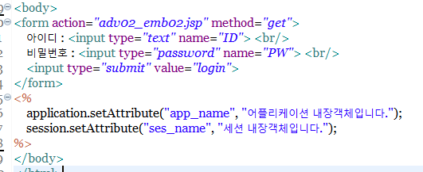
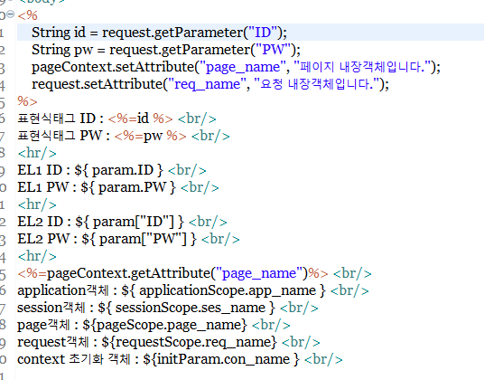
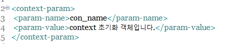
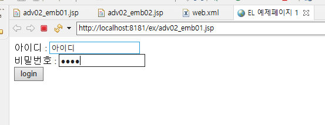

이동 한 뒤, binaries 폴더로 들어갑니다.

해당 폴더에서 1.1.2 버전을 찾아서 zip파일을 다운로드합니다.

다운받은 알집을 풉니다.

해당 알집을 푼 폴더로 들어가서 lib 폴더를 찾아서 들어갑니다.

폴더안에 jstl.jar 파일과 standard.jar 파일이 있는것을 확인합니다.

기존에 서버 설정시 다운로드 받았던 톰캣의 폴더로 이동하여 lib폴더를 찾아줍니다.

해당 lib폴더 안에 받은 jstl폴더의 lib폴더안의 두 파일을 모두 넣어주면 설정이 완료됩니다.
2단계Core,XML
1
-

JSTL의 Core태그는 taglib에 core를 선언함으로써, 사용할 수 있습니다.
해당 라이브러리는 변수의 선언과 출력, 반복문, 조건문 등을 태그로써 사용할 수 있도록 해줍니다.
-

위와같이 변수의 선언, 삭제, 출력, 조건문, 반복문의 예제를 작성해줍니다.
-

설정한 값들이 정상적으로 출력되는것을 확인합니다.
1
-

표현식 EL은 기본적으로 JSP에 존재하는 내장객체또한 지원합니다.
실습을 위해서 첫번째 페이지에 위와같은 form태그와 내장객체에 값을 적어서 두번째 페이지로 보냅니다.
-

두번째 페이지에서는 첫번째 페이지에서 보낸 값을 받고, 또한 자체적인 페이지 내장객체와 request 내장객체를 생성합니다.
그리고 해당 값들을 각각 출력하도록 합니다.
-

추가로, context 초기화 파라미터를 표현하기 위해서 web.xml에서 초기화 파라미터를 생성해줍니다.
-

첫번째 파일로 돌아가서 실행 후에 form태그에 값을 적어서 버튼을 클릭합니다.
-

입력된 값들이 정상적으로 출력되어, 표현식 태그로 값들을 표현할 수 있는지 확인합니다.